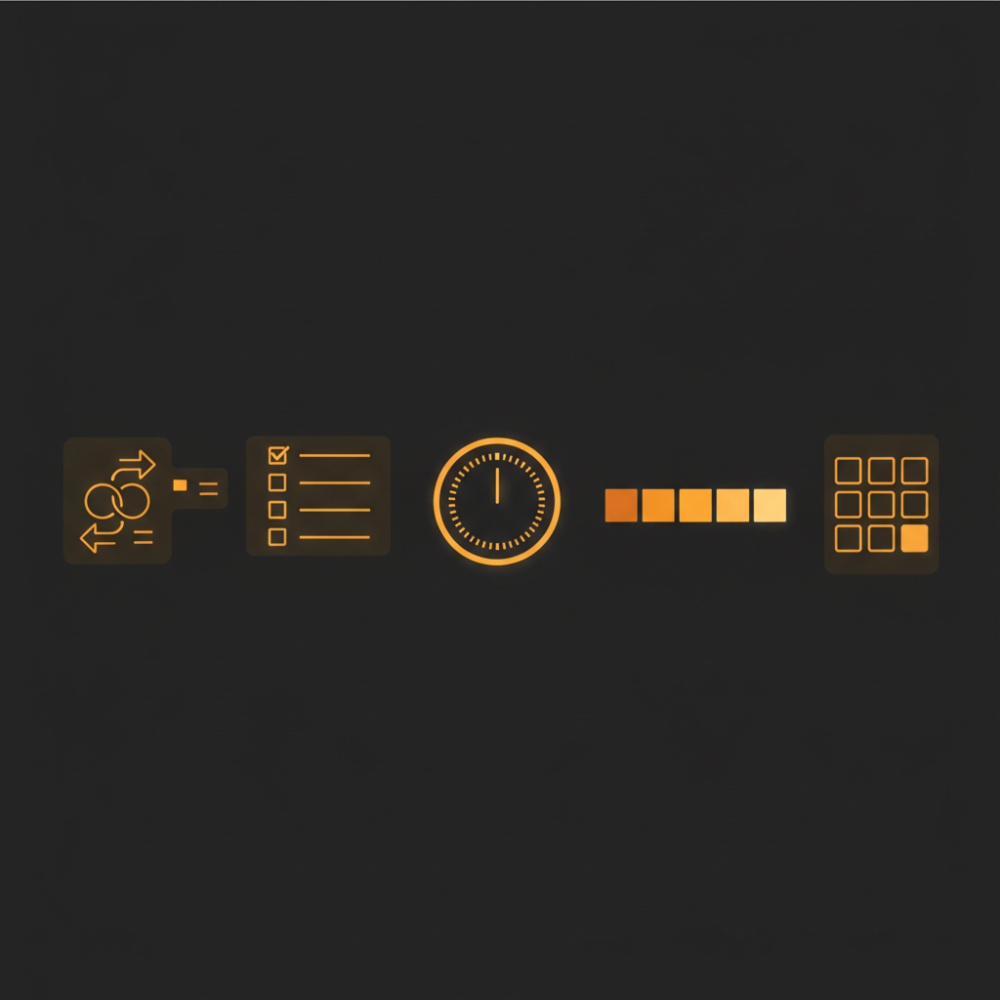

Les outils qu'on installe partout ailleurs, réunis au même endroit. Gratuits, sans compte, sans pub. Ils arrivent un par un — dis-moi celui qui te manque en premier.
Longueurs, poids, devises, températures : tape, c'est converti.
bientôtUn mot de passe solide en un clic, stocké nulle part.
bientôt25 minutes de focus, 5 de pause. Pour les devoirs comme pour les projets.
bientôtCoche ta journée, vois ta série grandir.
bientôtDes palettes prêtes pour tes designs, tes logos, tes fonds d'écran.
bientôtUn tableau simple : ce qui rentre, ce qui sort, ce qui reste.
bientôtBloqué sur un nom ? Des idées selon ton style.
bientôtPNG, JPG, WEBP : glisse, reçois, c'est tout.
bientôt